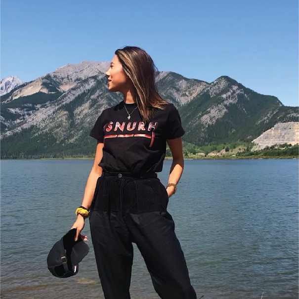

I find balance in the quiet and the loud. My inspiration comes from all corners of the world, even the white wall at home, which no decoration has. But mostly through the interest in sociaty and how we interact with each other.
As a child I was not a fan of social events, I kept to myself and enjoyed sitting by myself. It wasn't always completely sad, because most of the time was spent understanding how and what each individual found joy in.
That way I stay happy and you stay satisfied.
I took this knowledge with me on a journey through the out-pharse of my anxiety. To this day, I understand that we can influence companies across each other based on the mood and atmosphere that is present.
I now use this knowledge to create something beautiful, pleasant and effective, which leaves a positive attitude.